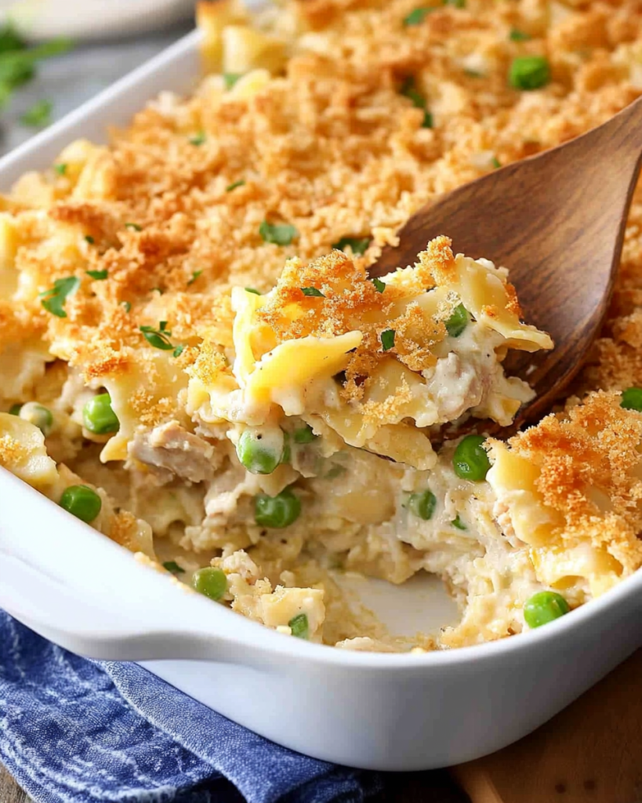

Tuna Tempter

A yummy tuna casserole that's quick and easy!
Ingredients
- 1 small can tuna, drained and flaked
- 1 can cream of celery
- 1/2c celery, chopped
- 1/4 onion, chopped
- 8oz egg noodles
- 1 soup can of milk
- 1/4c buttered bread crumbs
- 1c frozen peas (approx., optional)
Directions
- Cook noodles and drain.
- In a skillet, saute onions and celery in butter.
- Add cream of celery, milk (use cream of celery can to measure), and tuna to onions and celery.
- Add the above to a casserole dish along with noodles (and peas if desired), mix.
- Top with bread crumbs.
- Bake at 350°F for 25-30 minutes.
Home